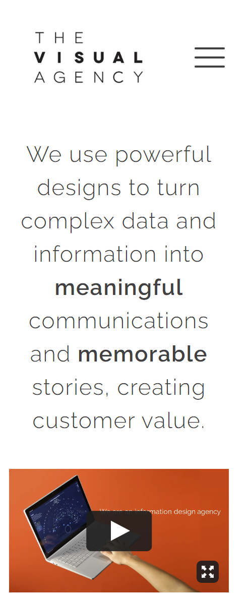

WDD 230 Design Principles
Alignment is a simple tool that can be utilized to keep things organized on a website. It can help steer visitors towards a particular activity. When coupled with other design elements such as repetion or the rule of thirds like they have on the BBC Earth site it can help add impact and drama to a website.
White Space and Clean Design
 The Visual AgencyAdding "White Space" to a website does a couple of things. One it gives the eyes a chance to rest from the main graphics, images and print on the page. At the same time it draws the main message of the site into sharp focus. On "The Visual Agency" site they combined White Space and a clean design to create a minimal design that helped to focus the visitor on the data and communication on the site.
Visual Hierarchy
George Nakashima WoodworkersOn the Nakashima Woodworkers Visual Hierarchy is used to tell about them as a business. When you arive at the site, the background image cycles through with an accompanying quote related to how they treat the wood when they work with it. Without ever visiting an "About Me" page you know what their business purpose. Visual Hierarchy is a tool to instantly convey information when you arrive at a site. With a glance you can see the things that are important.